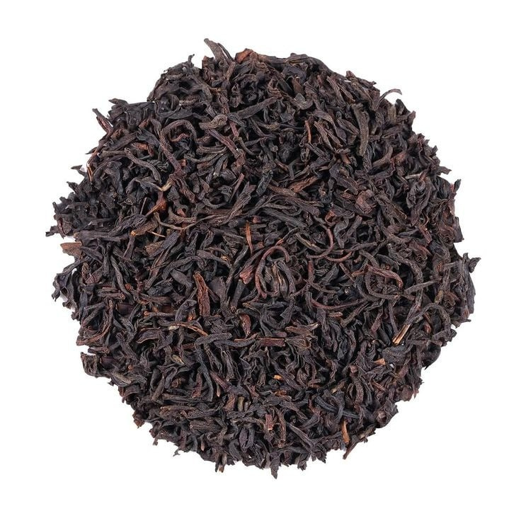

Trà lên men chín :
Là trà đã trải qua quá trình ủ ướt để thúc đẩy lên men vi sinh nhanh chóng, tạo nên nội chất dày, mềm và ít chát. Nước pha có màu nâu đỏ sậm, trong, độ sánh vừa phải. Trên mũi: note mùi đất ẩm, gỗ cũ, hương thảo mộc nhẹ, đôi khi có chút mùi mạch nha. Trên vòm miệng: vị ngọt dịu xuất hiện nhanh, gần như không chát, hậu vị sạch, mượt, độ kéo dài trung bình. Phù hợp cho người mới uống, người tìm kiếm cảm giác êm ái, dễ chịu, hoặc sử dụng làm pairing với món ngọt, đồ hấp.
XEM SẢN PHẨM →-
